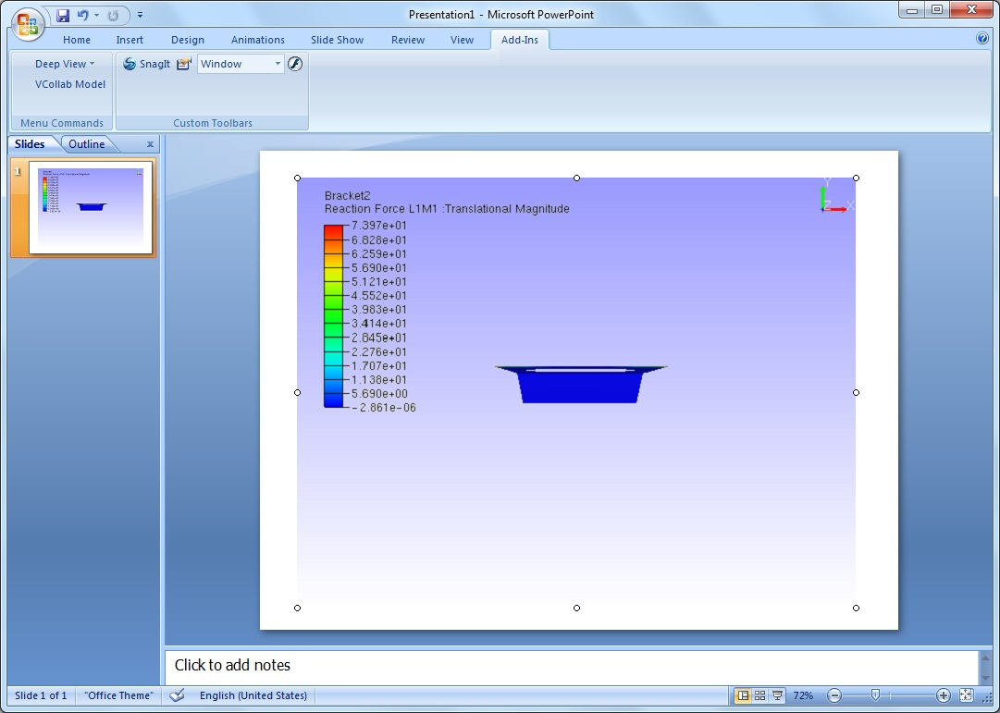

Power Point 2003
This section demonstrates how to embed VCollab Presenter into Microsoft Power Point 2003.
VCollab Presenter can be embedded into PowerPoint 2003 in two ways
- Embed through “Insert” menu items.
- Embed through Control Tool box.
This section explains in further about
- How to set images for offline mode?
How to embed Presenter through Insert Menu?
- Click Insert menu.
- Click menu item VCollab Control. This menu item is available if VCollab suite is installed in the system.

- This pops up open file dialog as below,

- Notice that VCollab control is embedded as below.

- Use right click options to view loaded model.
How to load Control Toolbox in Power Point 2003?
- Open Microsoft Power Point 2003
- Click View | Toolbars | Control Tool box as below.

- Make sure that More Controls icon is available in the toolbar as shown below in red circle.
How to embed VCollab Presenter in Microsoft Power Point 2003?
- Open Microsoft Power Point 2003.
- Make sure that Control Tool box tool bar is available. Load the tool bar if not.
- Click More Controls icon Tool box tool bar as shown below.

- Select VCollab Control.
- Draw a rectangle in the page and notice that presenter object is embedded.

- Click on the object with Right mouse button which drops down menu items.

- Select VCollab Control Object | Edit and notice that Presenter is ready to load model now as below.

How to set current view as object image?
- Embed VCollab control into PowerPoint.
- Using context, load a cax model.
- Click outside the presenter control.
- Control becomes an object which displays the standard front view of the model.

- Click ‘VCollab Control Object | Edit’ to get into the viewer.
- Transform the model. (either a rotation or translation or both)
- Click outside the control window.
- Still the control displays standard front view of the model in offline mode as above.
- Click ‘VCollab Control Object | Edit’ to get into the viewer again.
- Transform the model so that user can get a view which is to be set as object image.
- Right click the mouse which drops down the context menu.
- Select ‘Set as object or active image’ option.

- Click outside the control window and notice the change.

- User defined view was set as image to the object or control.
- Save the presentation.